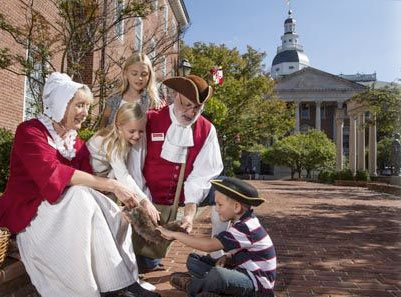
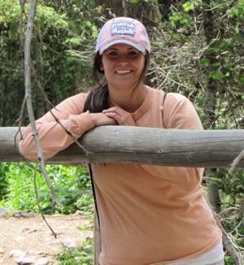
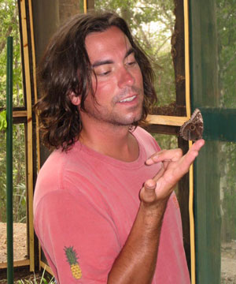
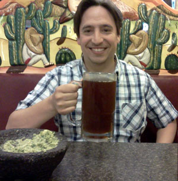

Annapolis, the capital of Maryland, is 350 years young. It is a vibrant city, proud of its charming colonial heritage, but has so many options for modern fun and games.
Annapolis is home to the United States Naval Academy and St. John’s College, a liberal arts college with a history going back to 1696. Annapolis is well known as a center of sailing and boating in the Mid-Atlantic. Neighboring Eastport, across the bridge from downtown Annapolis, retains much of its old maritime character, showcased at the Annapolis Maritime Museum.
It’s early yet, but we’ll be listing some of our favorite places to go and things to see in Maryland’s capital.
Things to Do
Watermark Tours

Photo: Three Century Tours
The Four Centuries Walking Tour of Annapolis Watermark’s signature walking tour. This Annapolis tour touches on all things related to the Maryland state capital and is a great choice when planning things to do in Annapolis. They cover: Naval Academy , Maryland Ave, St. John's College. Watermark also offers a ghost tour.
Get the free Annapolis App and take a self-guided tour through historic Annapolis
With the exception of Smokehouse Tavern, all of these restaurants offer a wide range of seafood as well.
Accommodations
We have blocked rooms out at these two hotels, it is also the weekend of a Navy Home Game so we want people to be aware they should book early.
O’Callaghan House (Downtown Annapolis)
Hampton Inn and Suites (Just Outside of Annapolis)
Book a room under the group name Hewitt & Sims Wedding with the code HSW. Check-in/out: September 15th-17th, 2016. Phone: (410)-571-0200.
Wedding Party
Bridesmaids
Patrice Gentile
I am so honored to be Jessie's maid of honor. Jessie and I met our sophomore year at Radford University. I knew right away she was a kindred spirit. We have remained close for the past 11 years (!). I was thrilled when Jessie and Andrew met and even more happy to meet him and see how much he truly cares for her. I'm looking forward to meeting Jessie and Andrew's family and friends, and excited to be a part of their special day.
Nancy Hodges
I first met Jessie in college when she was my RA (and didn't know how many parties we had ;-)) and was fortunate enough to reconnect with her when I lived in Savannah! She was a huge help when I moved to Annapolis and we became really close living near each other! I'm so blessed to have met her! She's such an amazing person and friend! Oh yeah, Andrew is pretty cool too!

Anna Sims
I'm Andrew's little sister. I am currently in Vet School at Washington State and will be graduating in May 2016 so that means when you see me at the wedding I'll be a veterinarian; my lifelong dream!! I'm planning on practicing in Montana with all the pretty horses and maybe some cows and dogs and cats too. I enjoy running, fishing, horseback riding and hanging out with my awesome dog Presley and my crazy cat Hootie. Andrew is one of the best big brothers a sister could ask for (Evan being the other of course). I'm soooo excited to be apart of this wedding and finally, after 26 years, I'm gaining a sister! Can't wait to celebrate!!
Karen Simms
I have known Jessie for about 9 years when we started college at Radford University. We were freshman year roommates! I remember how nervous I was to call her the summer prior to freshman year to ask her how we were going to divide up what to bring for the dorm. She was an awesome roommate but I didn't know she would end up being one of the best friends I have had! (Thank you Radford University for randomly choosing us to be roommates!) I am so happy she has found her Prince and I feel so honored to be standing up next to her when she says “I do”. Looking forward to September! :)
Groomsmen

Evan Sims
Out of all the groomsmen, Evan has known Andrew his whole life. Evan is a University of Montana graduate with a degree in Wildlife Biology. He is truly honored to be Andrew's best man and is looking forward to a beautiful ceremony.
Andy Martin
I met Andrew in middle school and we immediately bonded over video games, campfires, sci-fi, Sublime, and hanging out at the beach. Despite ending up at different schools, we've remained friends throughout the years and still manage to go on vacation together every year in Ocean City. My wife Maria and I first met Jessie when Andrew brought her on just such a vacation. It was clear from the start how well they complemented, and much how they adored each other. Congratulations Andrew and Jessie!

Raf Ruiz
Andrew was the first friend I made when I moved from Mexico to Baltimore in 2003, as we both started our first “official” job out of college. A few years later, Andrew introduced me to Jessie at a crab feast, she was very outgoing and made a great first impression with everyone. Thanks to Andrew I have met a lot of wonderful people, and made great friends throughout the years, including his soon to be bride Jessie.
{kind=link}